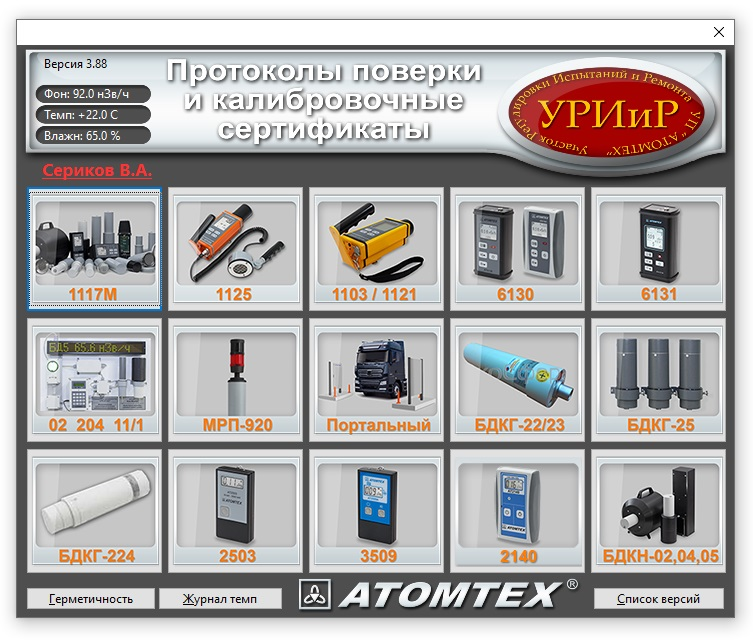

Макрос для протоколов и сертификатов
4.21

Картинки
Список устройств доступных в макросе
- В составе 1117М — протокол поверки, протокол проверки, сертификат: БДКГ-01, БДКГ-03, БДКГ-04, БДКГ-05, БДКГ-11, БДКГ-17, БДКГ-24, БДКГ-30, БДКГ-32, БДКН-01, БДКН-03, БДПА-01, БДПА-02, БДПБ-01, БДПБ-02, БОИ, БОИ-2, БОИ-4, БОИ-1 (с СБМ), БОИ-2 (с СБМ), БДКР-01, БДПС-02, БДПА-03, БДПБ-03, БДКН-05
- БДКГ-02
- БДКГ-204
- БДМГ-2343 (только протокол поверки)
- Портальный монитор — -11/1, -19, -35, БДРМ-05 (только протокол поверки)
- МРП-АТ920, 920В, 920Р — -11/1, -19, -35 (только протокол поверки)
- БДКГ-22, БДКГ-23, БДКГ-23/1
- БДКГ-224
- АТ1103М, АТ1121, АТ1123
- АТ6130, АТ6130А, АТ6130С, АТ6130Д
- АТ6131, АТ6131А, АТ6131B
- АТ1125 / АТ1125А
- БДКН-02 / БДКН-04 / БДКН-05
- БДКГ-11/1 для СРК (протокол поверки, протокол проверки, сертификат)
- ДКГ-АТ2503, ДКГ-АТ2503А, ДКГ-АТ2503B, ДКГ-АТ2503B/1, ДКГ-АТ2503B/2 (протокол поверки, протокол проверки, сертификат)
- ДКГ-АТ3509, ДКГ-АТ3509А, ДКГ-АТ3509В, ДКГ-АТ3509С (протокол поверки, протокол проверки, сертификат)
- БДКГ-25 (протокол поверки, протокол проверки, сертификат)
- АТ2140 (протокол поверки, протокол проверки, сертификат)
Как правило новые версии появляются гораздо раньше на FileServer, поэтому самую свежую версию лучше брать
там
(FILESERVER/Manufacture/Uchastok.RIR/База настроек/Instruction/_Макрос для протоколов/)
Как поставить себе макрос
Если макрос уже стоит и его нужно просто обновить, идем сюда
Макрос написан для OpenOffice, поэтому работать в MicrosoftOffice или в LibreOffice НЕ БУДЕТ
Если в процессе установки будет выскакивать такое окно, не обращаем внимания, жмем "ОК" (придется
нажать
несколько раз подряд)

- Распаковать архив с макросом в папку C:\Users\Имя
пользователя\AppData\Roaming\OpenOffice\4\user\basic

- Запустить OpenOffice Writer и в открывшемся документе нажать Alt+F11. В появившемся окне нажать
"Управление"

- Выбрать вкладку "Библиотеки" и нажать "Добавить"

- Открыть папку, в которую распаковывали архив, и в папке "AtomtexLibrary" выбрать файл
"script.xlb".
Нажать
"Открыть"

- Нажать "OK"
- Нажать "Закрыть"

- Следующее окно не закрываем, раз уж мы здесь, сделаем ярлык для запуска макроса. Для этого
выбираем нашу библиотеку ("AtomtexLibrary") и раскрываем её (нажимаем маленький плюсик):

- Выбираем модуль "ModuleMain", а в нем — функцию "MainDialog_Show" (эта функция запускает главное окно макроса) и нажимаем "Назначить"
- Под ярлык макроса сделаем отдельную панель, так будет удобнее. Нажимаем "Создать"

- Как-нибудь называем (например "Атомтех") и жмем "ОК"

- Жмем "Добавить"

- Опять выбираем модуль "ModuleMain" и функцию "MainDialog_Show". Жмем "Добавить"
- Нажать "Изменить", "Добавить значок"

- Выбираем значок (если нужен значок АТОМТЕХ, жмем добавить и идем в папку с библиотекой, там
где-то есть), жмем "ОК"

- Следует учитывать, что в макросе есть список пользователей макроса, поэтому если макрос попытается открыть пользователь, которого в этом списке нет, он получит вот такое сообщение: При этом пользователь может продолжить пользоваться макросом, но для этого ему каждый раз придется вводить своё имя. Чтобы добавить себя в список, обращаться к разработчику. Если по каким-то причинам нет возможности договориться с разработчиком (лень, например), можно добавить себя самому (но при следующем обновлении данные придется вводить опять). Для этого:
- На окне программы OpenOffice Writer жмем Alt+F11. Выбираем модуль "ModuleMain",
а в нем — функцию "MainDialog_Show" (уже такое было) и нажимаем "Редактировать"

- Видим окно кода макроса, почти в самом верху находим код, как на картинке, и добавляем своё имя пользователя по аналогии (добавить строчку users.add("Имя_пользователя") ). Жмякаем "Сохранить".
- Готово! Макрос установлен и работает

Если не получается, а всё это описание вызывает тоску и уныние, зовем
Вадима Серикова, он все сделает (недорого)
Как обновить уже установленный макрос
- Открыть папку \\Fileserver\Manufacture\Uchastok.RIR\База настроек\Instruction\_Макрос для протоколов
- Скопировать папку "AtomtexLibrary"
- Перейти по ссылке со своим именем
- Удалить папку "AtomtexLibrary"
- Ctrl+V
- Открыть папку C:\Users\Имя пользователя\AppData\Roaming\OpenOffice\4\user\basic\
- Удалить папку "AtomtexLibrary"
- В папке C:\Users\Имя пользователя\AppData\Roaming\OpenOffice\4\user\basic\ распаковать Архив с макросом
Способ 1 (Проще):
Способ 2 (Сложнее):
Как правило новые версии появляются гораздо раньше на FileServer, поэтому первый способ
предпочтительнее